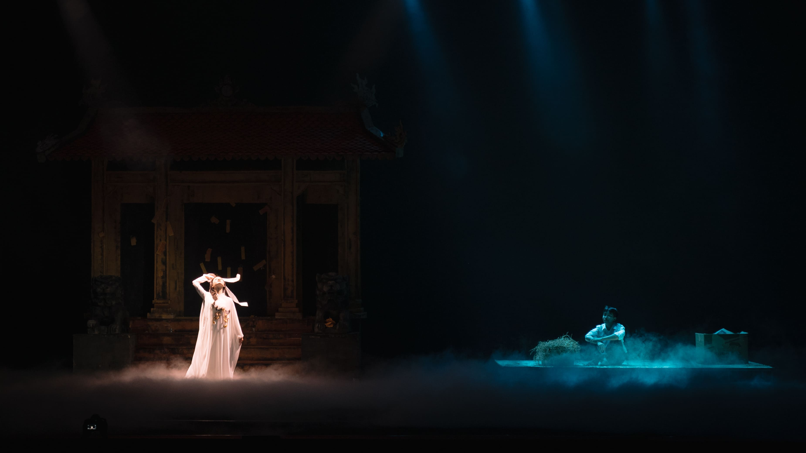

ON STAGE 2025: RẠCH CẠN
Giữa miền đồng hoang cỏ úa, con rạch khô nằm lại như một vết sẹo già trên da thịt của đất. Dòng nước rút đi để lại sự trơ tráy cạn cùng, đọng lại chỉ còn thứ bùn rêu tơ tướp mang hơi thở của cái ác - thứ bóp nghẹt sự sống của những khát khao tốt lành.
Dẫu vậy, dưới đáy sâu vang vọng những ẩn ức chưa được hóa giải, từng hạt mầm khát khao vẫn khẽ lay mình, lặng lẽ ghép lại những mảnh vỡ của ký ức.
Khát vọng trong trẻo ấy thôi thúc hành trình truy tìm tận cùng ngõ thẳm của sự thật, nơi những tiếng nói bị chôn vùi dưới lớp bùn sâu nay được lắng nghe, chạm tới mạch nguồn bị lãng quên. Và dường như đất cũng đáp lại, trong lòng tăm tối ấy, sự sống lại khẽ chuyển mình.
Từ lòng đất, một âm thanh vọng lại, như tiếng nước trở mình sau giấc ngủ dài.
